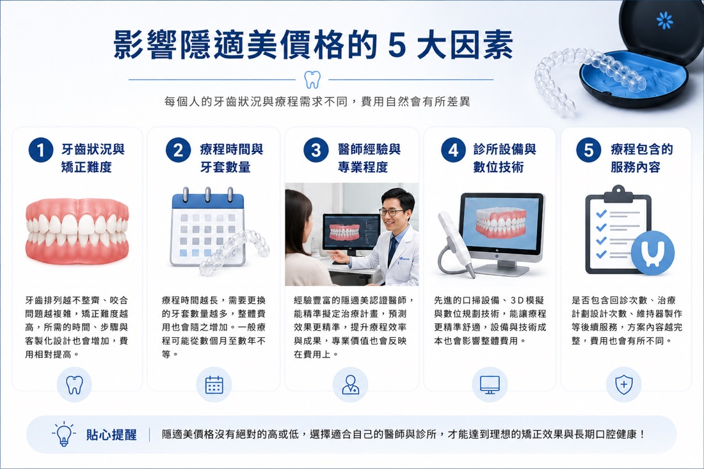
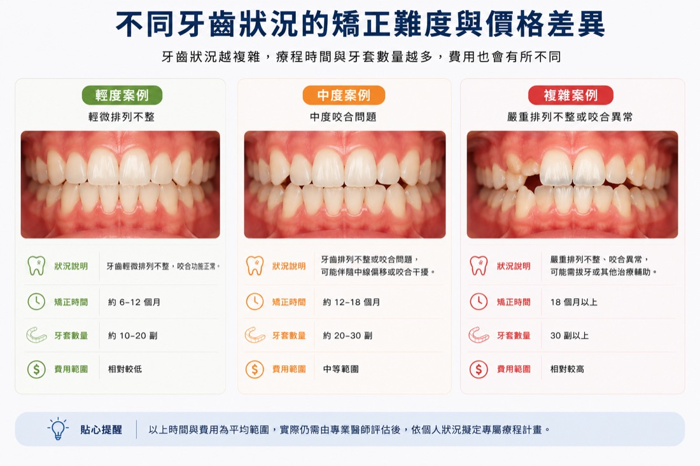
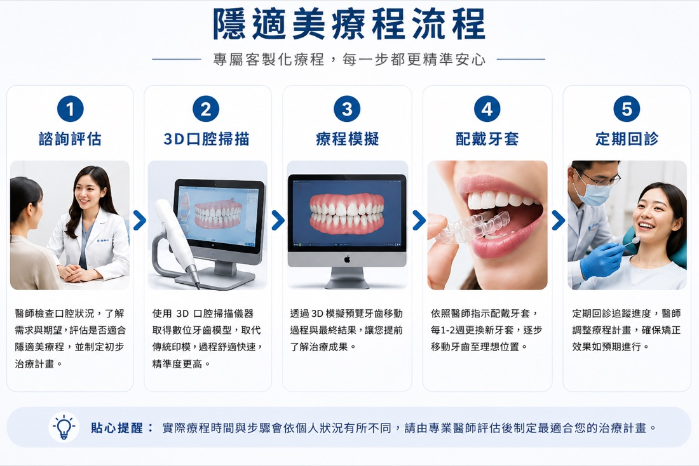
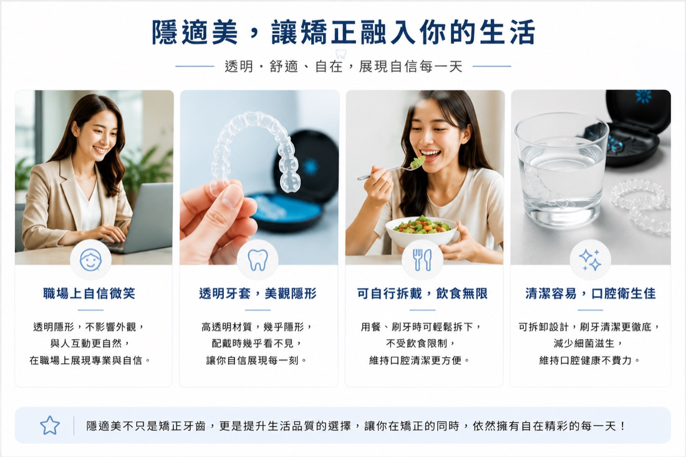

想了解台南隱適美價格，重點不是先看一個固定數字，而是確認牙齒排列、咬合狀況、療程複雜度，以及是否需要搭配其他治療。不同個案所需的牙套數量、療程時間與回診規劃不同，費用也會有所差異。
一般會先透過口腔檢查、X 光與 3D 口掃等資料進行評估，再由醫師說明適合的矯正方式、療程規劃與相關費用。
本文整理影響隱適美費用的常見因素、評估流程與常見問題，協助您在諮詢前建立更完整的了解。實際療程與費用仍須由醫師依個別口腔狀況評估後說明。

台南隱適美價格為什麼差很多？5 個常見影響因素
台南隱適美價格會依每個人的牙齒排列、咬合狀況、矯正難度、預估療程時間及治療需求而有所不同。因此，單看網路上的價格區間，無法直接判斷個人實際費用，仍需經醫師檢查與評估後說明。
常見影響價格的因素包括：1. 牙齒排列與咬合難度
如果只是輕微牙縫或齒列不整，療程通常較單純；但若有暴牙、深咬、咬合不正等問題，矯正難度與時間都會增加。2. 療程時間與牙套副數
隱適美是透過一系列透明牙套逐步移動牙齒，療程越複雜，需要的牙套副數通常越多。想了解每日配戴時數與完整療程長度，可參考〈隱適美要戴多久？療程時間與影響因素〉。
3. 是否需要搭配其他治療
部分患者可能需要：- 拔牙
- 骨釘
- 橡皮筋
- 牙周治療
是否需要拔牙須依齒列空間與咬合規劃判斷，可參考〈隱適美需要拔牙嗎？〉。
4. 醫師規劃與經驗
矯正不只是戴牙套，更重要的是療程規劃與咬合設計。專業醫師會依照患者臉型、咬合與生活需求，提供適合的矯正方向。5. 療程包含的服務內容
不同療程方案所包含的口腔評估、影像檢查、回診追蹤、牙套調整與後續維持安排可能不同，相關內容也可能影響整體費用。實際包含項目仍應以診所說明及醫師評估為準。
隱適美療程通常包含哪些內容？
許多人以為隱適美只有透明牙套，但完整療程通常包含：
- 初步口腔檢查
- 3D口腔掃描及模型建立
- 矯正評估與療程規劃
- 客製化透明牙套
- 定期回診調整
- 療程完成後維持器
哪些人適合台南隱適美療程？
隱適美近年受到許多上班族與學生族群歡迎，原因在於外觀自然、方便清潔，也較不影響日常生活。
常見適合族群包括：- 齒列不整
- 牙縫過大
- 輕中度暴牙
- 深咬
- 小下巴
- 希望低調矯正者
隱適美一定比傳統牙套貴嗎？
不一定。固定式矯正與隱形矯正的費用結構，會受到牙齒與咬合問題、治療難度、療程長度、是否需要其他裝置，以及回診與修正安排等因素影響，不能只用矯正器種類判斷哪一種一定比較貴。
比較報價時，建議確認檢查、數位掃描、矯正器或牙套、定期回診、修正階段及維持器是否包含，並了解哪些項目可能另計。隱形矯正可自行取下且外觀較不明顯，但需要穩定配戴與清潔；固定式矯正不需自行取戴。哪一種方式較適合，仍應由醫師依口腔條件與生活配合度評估，不應只以價格決定。
台南隱適美常見問題
隱適美會痛嗎？
剛更換新牙套時，部分患者可能出現緊繃感或輕微不適，通常會隨著適應逐漸減少。若疼痛持續或感覺明顯異常，建議回診請醫師檢查。
隱適美一天需要配戴多久？
通常需依照醫師指示，每天配戴約 20～22 小時，僅在飲食、刷牙與清潔牙套時取下。實際配戴時間仍以個別療程規劃為準。
隱適美多久會看到牙齒變化？
牙齒移動速度因人而異，部分患者可能在數週至數月內察覺變化，但整體療程仍會受到矯正難度、牙齒移動狀況與配戴配合度影響。
隱適美的外觀明顯嗎？
透明牙套相較傳統金屬矯正器較不明顯，但在近距離或特定角度下仍可能被看見。是否適合使用透明牙套，仍需由醫師依牙齒與咬合狀況評估。
如何評估自己是否適合隱適美？
每個人的牙齒排列、咬合狀況與治療需求不同，醫師通常會透過口腔檢查、X 光影像與 3D 口掃等資料進行評估，再說明可行的矯正方式、療程規劃與相關費用。
若正在評估台南隱適美、透明牙套或其他牙齒矯正方式，建議先由牙醫師檢查牙齒排列與咬合狀況，再選擇適合自己的治療方案。
若想先了解檢查項目與評估步驟，可參考〈第一次隱適美諮詢會做什麼？〉。
隱適美與傳統牙套怎麼選？
除了費用，兩種矯正方式在外觀、清潔方式、飲食便利性與適用情況上也有所差異。可進一步閱讀：
👉 隱適美跟傳統牙套差在哪？優缺點、價格、外觀一次比較預約台南隱形矯正費用評估
若想了解自己的療程選項與費用包含項目，可先查看台南隱形矯正與隱適美服務說明，再由醫師依檢查結果說明。
本文為一般口腔衛教資訊，不能取代醫師診斷。實際適應症、治療方式、療程時間與費用，須由醫師依個別口腔狀況及治療計畫評估。